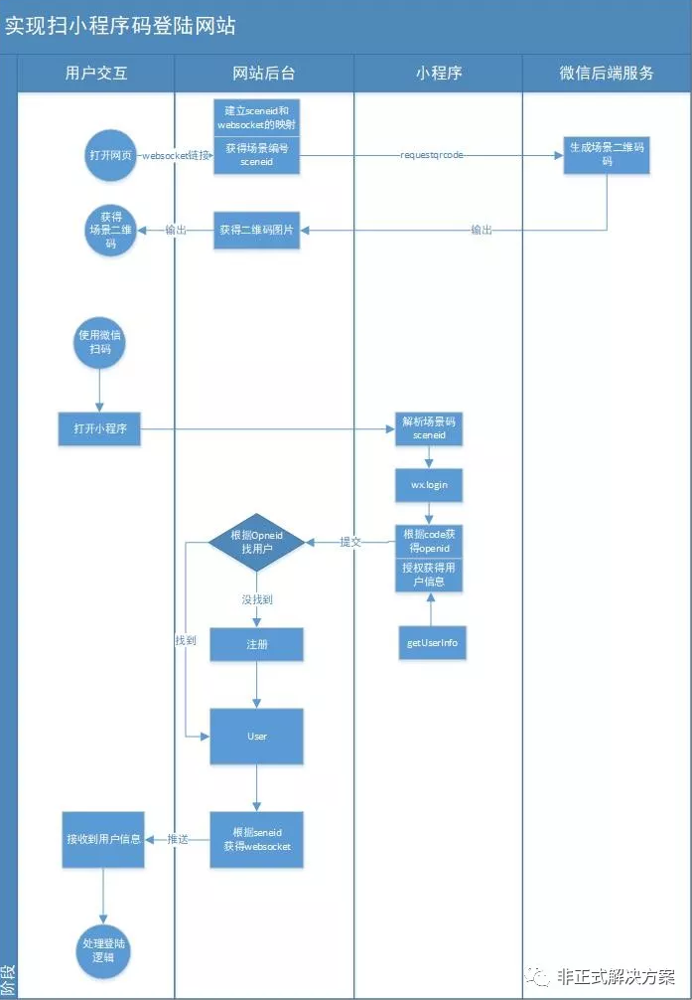
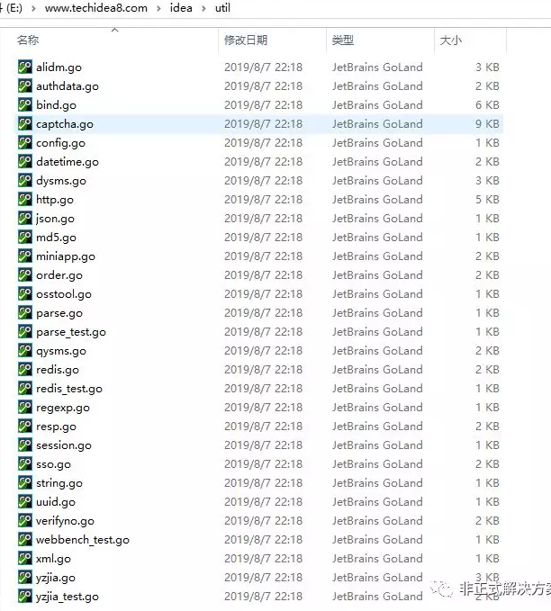

使用扫小程序码登陆网站
网络上关于实现本本功能的文章很多，但是给出案列的几乎没有，今天笔者实现用小程序码实现网站登陆，体验地址如下
https://idea.techidea8.com/open/login.shtml

场景ID可以前端生成，也可以后端生成，只需要保证sceneid的同一时间唯一性即可。
前端生成可以采用随机数加时间戳的形式,也可以用uuid算法
//时间戳
var sceneid ="scend-" + new Data().getTime() + Math.ceil(Math.random()*888888+1000000);var ws = new WebSocket("ws://192.168.0.106/websocket?clientid="+sceneid )
ws.onopen=function(env){
console.log(env)
}
ws.onmessage=function(env){
var data = env.data;
//这个data 就是后端发来的用户数据
}
后端采用go语言github.com/gorilla/websocket包建立websocket.因为golang 非常适合高并发场景。
func (ctrl *PushCtrl) websocket(w http.ResponseWriter, req *http.Request) {
//fmt.Printf("%+v",request.Header)
//todo 检验接入是否合法
//checkToken(userId int64,token string)
query := req.URL.Query()
clientid := query.Get("clientid")
conn, err := (&websocket.Upgrader{
CheckOrigin: func(r *http.Request) bool {
return true
},
}).Upgrade(w, req, nil)
if err != nil {
log.Println(err.Error())
return
}
clientMap.Store(clientid, conn)
go func(clientId string, conn *websocket.Conn) {
//处理出错信息
defer func() {
conn.Close()
clientMap.Delete(clientid)
}()
for {
_, _, err := conn.ReadMessage()
if err != nil {
log.Println(err.Error())
return
}
}
}(clientid, conn)
}我们采用sync.map建立sceneid和websocket的对应关系
clientMap.Save(sceneid,conn)对于因为异常断开的con我们需要移除
clientMap.Delete(sceneid)小程序access 请求接口如下
``
该接口日使用频率有限制，因此我们需要将这些数据缓存起来,缓存方案很多，有redis,也有内存，我们这里直接用一个变量即可存储
accesstoken :=""
func GetAccessToken() string{
return accesstoken
}
func RefreshAccessToken()string{
url = ""
resp := httpget(url)
//resp 是一个包含accesstoken的json字符串,我们解析这个json即可
accesstoken = decodeaccesstokenfromjson(resp)
return accesstoken
}我们还需要一个滴答计数器用来刷新accesstoken,accesstoken 的有效期是7200秒，我们4000秒刷新一次accesstoken 即可
func refreshAccessToken(){
ticker := time.NewTicker(time.Second *4000)
for{
select {
case <-ticker.C:
RefreshAccessToken()
}
}
}在init.go 中的init方法中启动协程
go refreshAccessToken()小程序二维码请求接口如下
https://api.weixin.qq.com/wxa/getwxacodeunlimit?access_token=ACCESSTOKEN
由于该链接会返回俩种结果
{
"errcode":400001,
"errmsg":"什么什么原因"
}这是一个二进制码流，因此我们需要对返回结果进行标准化处理
我们建议一种标准化结果
{
code:0,
data:"",
msg:"结果说明"
}| 参数 | 说明 | |
|---|---|---|
| code | 标识成功或者失败,200为成功,400为失败 | |
| data | 图片的base64格式编码 | |
| msg | 结果说明,或者出错提示 |
代码示例如下
url := fmt.Sprintf("https://api.weixin.qq.com/wxa/getwxacodeunlimit?access_token=%s", token)
ret, err := util.PostJSON(url, arg)
if err != nil {
util.FailMsg(w, err.Error())
return
}
jsonstr := string(ret)
if strings.Contains(jsonstr, "errmsg") {
util.FailMsg(w, jsonstr)
return
} else {
base64data := base64.StdEncoding.EncodeToString(ret)
util.RespOk(w, "data:image/png;base64,"+base64data)
}其中util是笔者封装的常用工具包

前端请求成功后获得data,可以利用$("#qrcode").attr("src",res.data)刷新图片二维码
function refreshqrcode(){
clientId = "scene-"+new Date().getTime();
var api = restgo.buildapi("miniapp/getwxacodeunlimit")
restgo.post(api,{"scene":clientId}).then(res=>{
if(res.code==200){
$("#qrcode").attr("src",res.data)
}else{
alert(res.msg)
}
intiwebsocket()
},res=>{
alert(res.msg)
})
}我们编程过程才用了uniapp，这个框架不错,完全是vue的语法，
一套代码可以生成H5/小程序/android/ios
我们采用了vue的watch特性,通过监听userid来确定是否发送信息
watch:{
userid:function(a,b){
if(a==0){
return
}
this.loaddata()
//如果clientid是空的说明不是扫码进来的
if(!this.clientid){
return
}
//如果是扫码进来的,那么我们还需要推送消息到服务器后端
server.PublishMsg(this.clientid,this.userid,this.role,this.avatarUrl,this.nickName).then(res=>{
tip.error(res.msg)
},res=>{
tip.error(res.msg)
})
}
}我们通过onload方法获得sceneid
onLoad(arg) {
if(!!arg && !!arg.scene){
this.clientid = decodeURIComponent(arg.scene)
}
},通过gotUserInfo获得用户头像、昵称等,通过uni.login获得code
gotUserInfo :function(e) {
//获得用户头像、昵称、
uni.login(
{
success:(res) =>{
//通过wx.login获得code
userInfo.code = res.code
//统一传递到后端
this.authwithcode(userInfo)
}
}
)
}
},
authwithcode:function(userInfo){
//code获得openid在后端做,做了后继续去查User表
server.AuthWithCode(userInfo).then(res=>{
//如果这个openid绑定了用户
if(res.data.id>0){
//这里res.data 就是user对象,可以继续操作
return ;
}
//如果没有那么注册
server.RegisterWithOpenId(res.data.mini_openid,userInfo.avatarUrl,userInfo.nickName)#.then(res=>{
//注册成功则返回
//这里res.data 就是user对象可以继续操作
},res=>{
tip.error(res.msg)
})
},res=>{
tip.error(res.msg||"");
})
}
}, 本文所有应用体验地址如下
互联网行业解决方案吧https://idea.techidea8.com/open/idea.shtml?id=5
请认真阅读readme.md